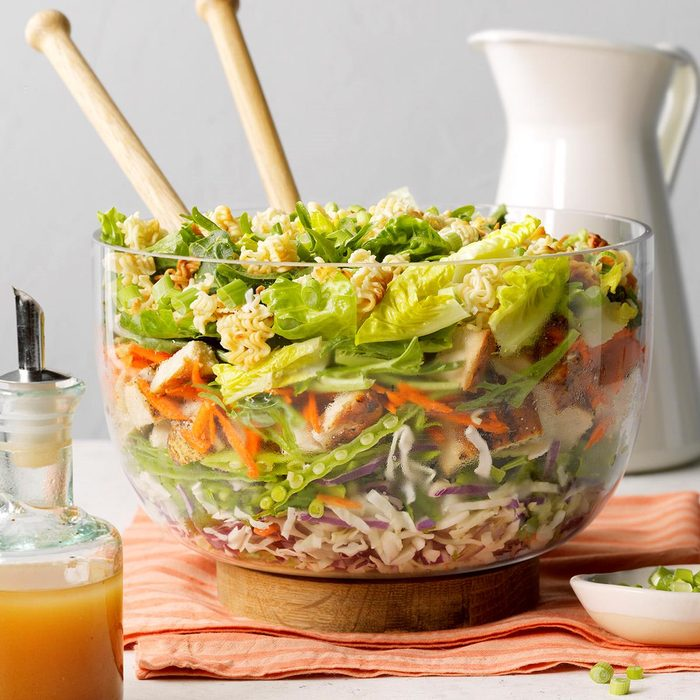

Grilled Chicken Ramen Salad
Total Time:
Prep/Total Time: 30 min

" I love this chicken ramen salad because it's a complete meal in one bowl.
Everyone loves when it's on the table—that's a reaction that doesn't happen every night,
so I appreciate the kudos when I get them! —Skyler White, Albuquerque, New Mexico
Ingredients
- 2 tablespoons canola oil
- 2 packages (3 ounces each) ramen noodles, crumbled
- 2/3 cup canola oil
- 2 teaspoons sesame oil
- 1/3 cup seasoned rice vinegar
- 1 tablespoon sugar
- 2 tablespoons reduced-sodium soy sauce
- 1-1/2 pounds boneless skinless chicken breast halves
- 1/2 teaspoon pepper
- 1/4 teaspoon salt
- 1 package (14 ounces) coleslaw mix
- 1/2 cup minced fresh cilantro
- 3 cups fresh snow peas, thinly sliced lengthwise
- 2 cups shredded carrots
- 4 cups torn mixed salad greens
- 3 thinly sliced green onions
- 1/3 cup crumbled cooked bacon, optional
Steps
- In a large saucepan, heat oil over medium-low heat. Add ramen noodles; cook and stir until toasted, 5-8 minutes. Remove from pan; set aside.
- In a small bowl, whisk oils, vinegar, sugar and soy sauce until blended; set aside.
- Sprinkle chicken with pepper and salt. Place chicken on a lightly oiled grill rack. Grill, covered, over medium heat or broil 4-5 in. from heat until a thermometer reads 165°, 8-10 minutes on each side. Cool slightly and chop into 1/2-in. pieces.
- In a large bowl, combine coleslaw mix and cilantro. Layer coleslaw mixture, peas, chicken, carrots, salad greens, noodles and green onions in an 8- to 10-qt. dish. Sprinkle with bacon; serve with vinaigrette.
Nutrition Facts
1 serving: 458 calories, 29g fat (4g saturated fat), 47mg cholesterol, 738mg sodium, 28g carbohydrate (10g sugars, 4g fiber), 22g protein.